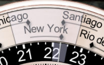
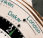
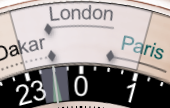
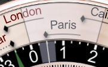
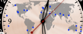
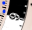
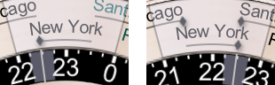
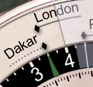
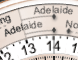
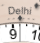

Chronometer for the Web
A web port of Emerald Chronometer, an astronomical watch-face app originally built for iPhone and iPad.
View the project on GitHub · Credits · Privacy · Support · Disclaimer
Session state is persisted via URL only -- bookmark or share the URL to save your session. No cookies or local storage are used. See Privacy for more information.
General Help Topics
Privacy
Emerald Chronometer for the Web
Overview
Emerald Chronometer for the Web is a fully client-side application. It runs entirely in your browser and does not communicate with any application server for its core functionality.
Data Collection
The app itself does not collect, store, or transmit any personal data to any application server. There are no app-level analytics, tracking pixels, cookies, or telemetry of any kind.
Web Server Logs
When the app is served over HTTP or HTTPS, the hosting provider (SiteGround) records standard web server access logs for each page and resource request. These logs include:
- Your IP address
- The URL requested, including query-string parameters such as latitude, longitude, city name, and timezone
- Timestamp, HTTP status code, referrer, and browser user-agent string
These logs are retained by SiteGround for up to 30 days and are used solely for security monitoring and troubleshooting. They are not analyzed for user tracking purposes.
When running from file:// URLs (a local copy of the app), no
server is involved and no logs are generated.
Map Tile Requests
When you use the location dialog (on pages served via http:// or
https://), the app fetches map tile images from
OpenStreetMap
to display a preview of the selected location.
These requests are standard image fetches and do not include any metadata identifying the tile coordinates as your location — OpenStreetMap sees only which map tile was requested, the same as any map browsing.
Browser Location (Geolocation API)
If you tap "Use device location via browser", the app uses the browser's Geolocation API to obtain your coordinates. This data is processed entirely within the browser — the app never sends it to any application server.
The resolved coordinates are matched against a bundled database of approximately 47,000 cities to display a human-readable location name. This reverse-geolocation lookup happens entirely in the browser — no external geocoding service is contacted.
URL Parameters
The app stores your location settings (latitude, longitude, city name, timezone) as URL query parameters. This is the only persistence mechanism — no cookies or local storage are used.
Note: Because these parameters are part of the URL, they are visible in your browser history and, when served over HTTP or HTTPS, in the hosting provider's access logs.
Third-Party Services
- OpenStreetMap (map tiles only, HTTP/HTTPS only) — governed by OSM's privacy policy.
Contact
For questions about this privacy policy, please visit the project on GitHub.
Last updated: May 2026
Support
Emerald Chronometer for the Web
This free web app is served by a site run by volunteers and provides no support. All the website does is serve, as a convenience, files available from the GitHub releases page (see instructions for running the app here).
You are encouraged to report issues to the developers at the GitHub issues page here, but as the developers are also volunteers you may not get a response in a timely fashion.
Disclaimer
Emerald Chronometer for the Web
THIS FREE WEB APP IS PROVIDED “AS IS”, WITHOUT WARRANTY OF ANY KIND, EXPRESS OR IMPLIED, INCLUDING BUT NOT LIMITED TO THE WARRANTIES OF MERCHANTABILITY, FITNESS FOR A PARTICULAR PURPOSE AND NONINFRINGEMENT. IN NO EVENT SHALL THE AUTHORS OR COPYRIGHT HOLDERS BE LIABLE FOR ANY CLAIM, DAMAGES OR OTHER LIABILITY, WHETHER IN AN ACTION OF CONTRACT, TORT OR OTHERWISE, ARISING FROM, OUT OF OR IN CONNECTION WITH THE SOFTWARE OR THE USE OR OTHER DEALINGS IN THE SOFTWARE.
The pages served to your browser are available at the GitHub releases page (see instructions for running the app here).
Terra and Gaia are world-time faces.
On Terra, there are 24 cities arrayed around the outer edge of the front of the face; you may customize the selection of cities from the 80,000-city database (see below). Each city has an associated "dot hand" which indicates that city's time against the 24-hour ring (in black and white, just inside of the city ring). If the city's time zone uses Daylight Saving Time (DST, also called Summer Time in some locales), then the dot hand will move along its "channel" twice a year when DST transitions for that city; each dot moves independently of the others according to the rules for its city's time zone. If the city's time zone does not use DST, there will not be a channel for the dot, but instead a dashed line under the city to associate the city with the dot.
The city fully underneath the clear overlay indicator at the top of the face is used to determine the time shown by the large "main" 12-hour hands in the center of the face, along with the date and day of the week shown in the windows. Below the selected city, over the 24-hour dial, is a smaller clear indicator with a hairline center; this will be aligned with the top city's dot, and thus will indicate the 24-hour time of the selected city on the 24-hour dial. The selected city is determined by your current location, which is shown in the control panel below the face. To change the selected city, use the location button below the face to set a new location.
For example, in the picture below, New York is the selected city (and thus New York's time will be displayed in the central dial). New York has a solid channel for its dot, so its time zone uses Daylight Saving Time, and DST is in effect (the dot is at the right end of its channel). We can see from Santiago's dot that the times in Santiago and New York are the same at the current time, but that Santiago is not on DST at the current time (its dot is at the left of its channel).

The time in New York (and Santiago) is about 22:15, or 10:15pm, since the dots for those cities are aligned with that time on the 24-hour dial (we also know it's evening because the time is in the dark "night" zone from 6pm to 6am).

In the picture at right, it may be seen that Dakar does not use DST, because it has a dashed line in place of the dot-motion channel. In this picture we can also see the green UTC hour hand in the black portion of the 24-hour dial (Dakar's timezone is at UTC+0 year-round).The city labels are "laser etched" into the ring so that the background shows through, and underneath the ring are colored background parts that move to change the apparent color of the city labels. If the city label is black, it means that the city is on the same day as the central "main" time, and thus the city's day may be read from the central windows.

If the city label is green, it means the city is on the next day (relative to the central windows), and if the city label is red,
it means the city is on the previous day. These two pictures show the same time (11:30pm in London, 12:30am the next day in Paris) with the outer ring in two different positions; when London is selected by the clear overlay, Paris is on the next day and is green, but when Paris is selected, London is on the previous day and is red.There are 24 blue dots on the central world map, and they indicate the locations of the 24 cities arrayed around the city ring:

Because the cities are at different latitudes (and offsets from the nominal longitudinal time zone meridian), it is not possible to display the actual times of sunrise and sunset (and thus the daytime and nighttime hours) for all 24 cities,

and so the day/night ring on this face is fixed with 12 hours of day (white) and 12 hours of night (black). Contrast this with Mauna Kea, and with Gaia, where the actual times of day and night, based on the sunrise and sunset times at a single location, are shown.Nearly all cities will have their dot either to the left or the right of the city label center, rather than directly underneath the center.

This is done to minimize the distance the dot must be from the label when DST is in effect; for example, when New York is on standard time (EST, UTC-5), the dot is slightly to the left of the label center, but when it is on daylight time (EDT, UTC-4), the dot is slightly to the right of the label center. The same placement rule is followed for cities that do not have DST, so that the cities can be evenly spaced around the ring; this has the additional advantage that such cities can usually appear in two different positions on the ring, thus giving more flexibility to the choice of cities (see below).Settings (customization)
This face allows you to customize the cities that are shown on the outer ring. Use the "Change cities" button below the face to search for and select cities.
NOTE: To avoid confusion, one of the cities on the ring must display
the time in the timezone your device has been set to. Usually this is not an
issue, but in certain rare circumstances your choice may be overridden if that
choice would mean there is not a slot that can display the device time.
Note: It is not necessary to know these rules in order to use Terra.
They are provided as background information for the curious.
Rules for which slot(s) of the World Time Ring that a city may
appear in:
The general rule is that a city may appear only in the slot(s) which
minimize the maximum travel of the "dot hand" from the center of the city
label. Labels are centered at an angular position which corresponds to a
time halfway between two integral UTC hour offsets, so that cities with
DST will have their two offset times arrayed on either side of the label
center.
Timezone Slot Rules (tap to expand)
This minimization of the dot's distance from the label means that a city which has DST can typically appear in only one slot, unless the two offsets are exactly 30 minutes from an integral UTC hour offset. For example, New York City has offsets of UTC-5 in the winter and UTC-4 in the summer; the minimum-dot-travel requirement means it can only appear in the slot whose city label is centered at UTC-4:30. In the picture above, it clearly can't go either where Chicago or Santiago is, given its dot's travel range.
But Adelaide, Australia has offsets at UTC+10:30 in the summer and UTC+9:30 in the winter; it can go either in the slot whose label is centered at UTC+9:30 or the slot centered at UTC+10:30,

because either choice results in the dot being a maximum of one hour from the label center. Here we've put it in both slots just to illustrate the capability.On the other hand, a city with no DST but which has an integral UTC hour offset can also go in two slots. For example, Honolulu, with its unchanging offset of UTC-10, can go either in the slot whose label is centered at UTC-10:30 or the slot centered at UTC-9:30; each choice results in the dot being 30 minutes from the label center. Here again we've put it in both slots for illustration.
Finally, a city with no DST but with a non-integral UTC hour offset can only go in one slot. For example, Delhi, with an unchanging offset of UTC+5:30,

can only go in the slot whose label is centered at UTC+5:30; at that position its dot is directly underneath the label center.In addition to these rules, there is a more complex rule that the device's time zone must appear in one of the 24 slots, so that the slot may be selected and the main time hands can show the time of the device. This rule is invoked when the slot normally associated with the device time zone contains a city with different DST rules. In this situation a message is displayed and your choice is overridden.